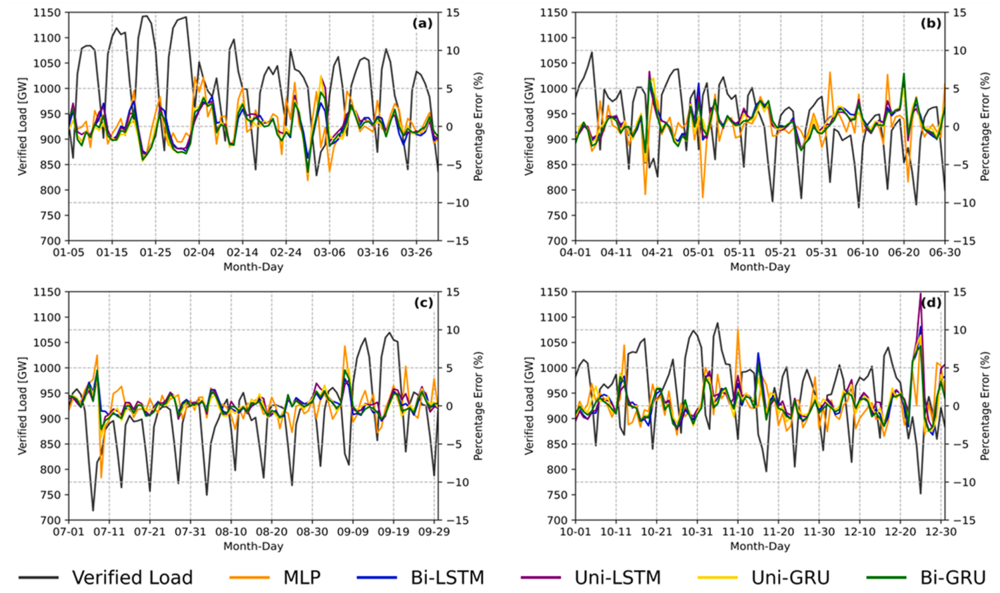

Neural networks for electricity demand forecasting
Forecasts of tomorrow’s electricity demand support generation scheduling, reserve decisions, and electricity-price formation. This collaboration studies day-ahead forecasts at half-hour intervals for Brazil’s Central-Southeast market, a region with large population centers and varied weather conditions.
The work includes an empirical comparison of forecasting models and a review of methods used in short-term operational planning. Both papers bring together researchers at Brazilian and U.S. universities and Marangon Consulting & Engineering.

Figure 1 of Morais et al. (2023) traces the forecasting process from load, weather, and calendar data through model training and evaluation.
Comparing forecast models
The empirical study compares shallow and deeper multilayer perceptrons with long short-term memory networks and gated recurrent units, including versions that process the input sequence in both directions. Inputs combine recent load, calendar and holiday information, and temperature forecasts. A separate experiment uses NOAA Global Ensemble Forecast System (GEFS) temperatures, weighted by population and bias-corrected for the study region.
Model comparisons use percentage error, Nash–Sutcliffe efficiency, and the Diebold–Mariano test to assess whether differences in forecast accuracy are statistically meaningful.
Results across two test periods
With system-operator temperature data, the bidirectional LSTM achieved a mean absolute percentage error of 1.179% over the three-month test, compared with 2.006% for the operator’s forecasts. Recurrent models also handled some holidays better than the feedforward benchmark.
In the separate full-year test covering 2019, the bidirectional GRU using GEFS temperatures achieved 1.608% error. Operator load forecasts were unavailable for that period, so the full-year results cannot be compared directly with the operator’s performance.
Deeper feedforward networks offered no clear practical advantage. The benefits of bidirectional over unidirectional recurrent networks were also less consistent in the full-year experiment.

Figure 6 of Morais et al. (2023) shows seasonal differences in the 2019 GEFS experiment. The black line tracks demand on the left axis; the colored lines show forecast percentage errors on the right.
Operational context and my contribution
I contributed to the empirical paper’s methodology, software, and manuscript review. The companion review, led by Giancarlo Aquila, examines input selection, similar-day grouping, weather-station selection, hierarchical forecasting, and net demand after renewable generation. It relates these choices to Brazil’s day-ahead dispatch process, including DESSEM, as documented in 2023.
Forecast accuracy depends on the region, input source, and evaluation period. The dataset for the three-month experiment excludes April–September 2020, leaving performance during the initial pandemic demand disruption untested. The companion review synthesizes the literature and operational context; the empirical findings come from the forecasting study.